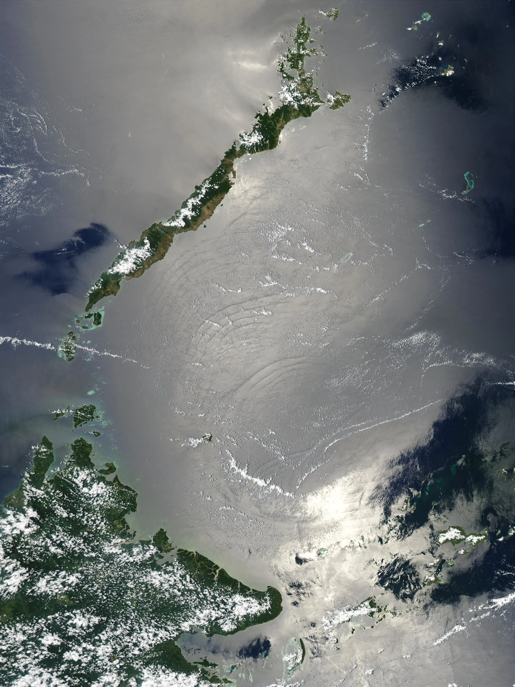
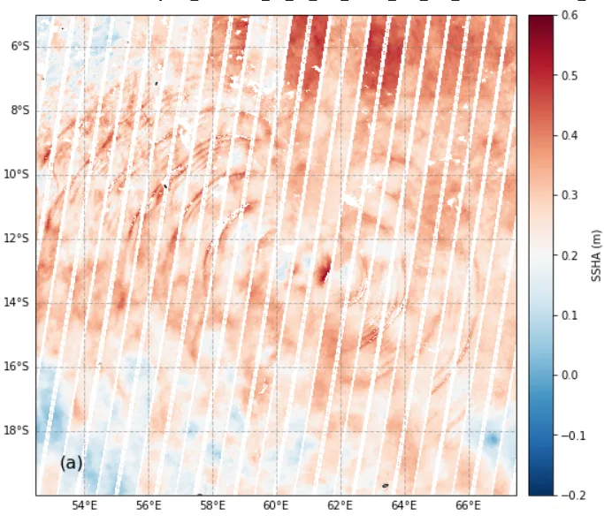
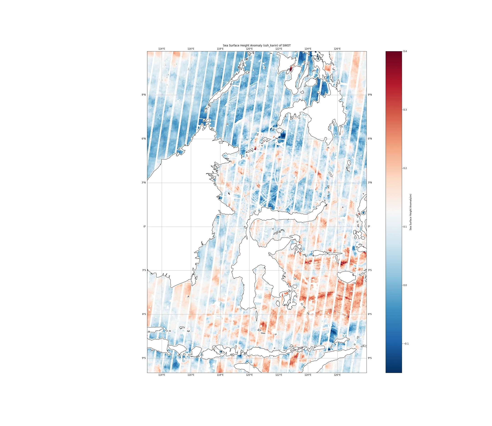
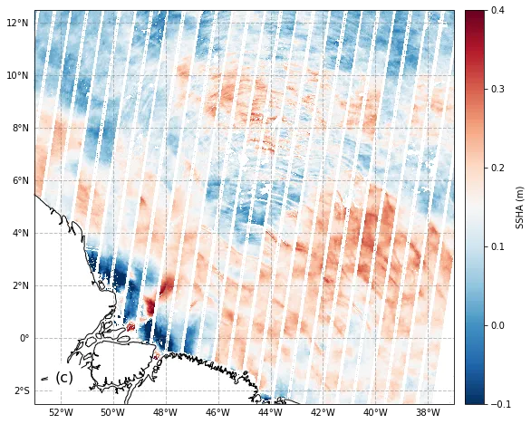

内波并非SWOT观测的主要目标。事实上，内波与潮汐一样，需要在研究地转平衡海洋动力学时被剔除。由于SWOT具有高分辨率和低噪声水平，它能够检测到由内波在海表面引起的高度异常。
内波小科普
内波，也称为内重力波。根据流体分层、生成机制、振幅和外部力的影响，内波还有许多其他名称。如果界面振幅很大，它们被称为内孤立波。如果在海洋中由潮汐流过海底山脊或大陆架产生，它们被称为内潮。如果它们比地球旋转频率慢，以至于同时受到重力和科里奥利效应的影响，被称为近惯性波。
内波通常波长从几百米到几十公里不等，周期从几分钟到几小时不等，其振幅常超过100米。内波虽不如海面波浪那般显眼，但其潜藏于水中的特性使其具有难以预测的危险性，因此也被称为“水下魔鬼”。
例如，加拿大戴维斯海峡的一个深水石油钻探平台曾因内波的影响被迫中断作业，后来不得不安装内波预警系统来保证安全。内波的影响力非常大，能在垂直方向产生巨大作用力。1963年4月10日，美国的“长尾鲨”号核潜艇在大西洋上遭遇强烈内波，结果因为内波的垂直压力超出承受极限而沉没，船上160名船员均未生还。这一悲剧凸显了内波潜在的危害性。
内孤立波
内孤立波是一种特殊的内波现象，它在海洋和大气中都可能出现。一旦形成，内孤立波可以在没有外部干扰的情况下保持其形状和速度。
由于其强烈的非线性特性，它们可以在海面上产生显著的辐聚或辐散现象，从而引起海面粗糙度的变化。这种变化使得内孤立波能够通过卫星遥感技术较为容易地被观测到。然而，并非所有类型的内波都具有如此显著的特征，能够被卫星直接观测。
近惯性波
近惯性波是一类在海洋中广泛存在的内波，是由科里奥利力和重力共同作用产生。主要由风暴、风突变或其他快速变化的气象事件激发，尤其是当这些事件的时间尺度接近或者短于地球的惯性周期时。它们在Garrett-Munk内波谱中 $f$ 处形成一个显著的峰值。
内潮
内潮是由表层潮汐动力直接引起的，当海洋表层水因潮汐作用上升和下降时，这种垂直运动会传递到下层，引起水体内部不同密度层之间的波动。这种波动在海床地形复杂或变化区域尤为明显，因为地形的变化可以局部改变水流的速度和方向，从而更强烈地激发内波。内潮的周期与海洋表层的潮汐周期一致。
内波连续体
内波连续体（Internal Wave Continuum）的能量主要分布在海洋的惯性频率 $f$ 到浮力频率 $N$ 之间,不包括近惯性内波、内潮等特定峰值。这些内波是海洋中由各种过程产生的波动，它们在海洋的垂直结构中传播，并且与海洋的湍流和混合过程密切相关。
SAR和光学影像探测内波
内波会导致水下密度分层的变动，进而影响海面的流速和流向。这种变化会改变海面的粗糙度。例如，内波的存在可能使海面在波峰区域比波谷区域更加平滑或更粗糙。
由于海面粗糙度的变化，SAR以及光学遥感载荷接收到的回波强度也会相应变化。在海面较平滑的区域，反射信号的回波较弱；而在较粗糙的区域，回波则较强。通过分析这些强度变化，可以识别出内波的位置和形态。
SAR产生的图像可以显示出内孤立波的特征，如波长、波速、振幅和传播方向等。但SAR不能测量内波在海面高度上产生的振幅，也不能探测其他类型的内波。

SWOT测量内波的海表高度异常
内波发生时，海面高度可能有所改变。SWOT可以铺捉到这种内波信号，和传统高度计比较，SWOT干涉测量是三维的，测量的内波结构更加细致丰富。
通过计算SWOT观测的SSHA在小尺度的能量，基本发现是能量大的区域为内波（内潮）引起，并且掩盖了中尺度和亚中尺度信号。
下面是SWOT在一些典型海域观测到的内波。

塞舌尔高原是一个位于热带印度洋的广阔半椭圆形结构，具有陡峭的坡度、浅平均深度、大尺寸和独特的动力学特性。
从上面的SSHA图像，可以清楚的看到内孤立波的源头、传播方向以及耗散区域。

印尼周边海域附近内波太多了，这里有印度尼西亚贯流（ITF）的重要出口通道。因其复杂的海岸线几何形状、海底地形、狭窄的通道、分层的水域和强烈的潮汐流，成为产生强烈海洋内波的有利地区。

亚马逊河是世界上淡水排放量最大的河流之一，显著地调节了周围水域的分层结构，河流的羽流经常向西北延伸数百公里。亚马逊河口的大陆架具有复杂的海底地形和强烈的潮汐。
大多数内波沿着大陆架向亚马逊河上游传播，与北巴拿马海流的方向相反。
几个可以写论文的方向
SWOT观测内波比较容易，而且测量的三维高分辨数据非常有创新性。那么大家写点文章是完全没问题的。怎么才可以写点文章呢？我感觉有很多方向是可以尝试的。下面是几个送给关注我的粉丝的idea，免费的。
结合SWOT干涉测高的SSH数据和同步观测的后向散射系数，可以精确测定内波的传播速度、振幅和方向。这种数据融合，加上当前的人工智能技术，为高质量研究提供了强有力的工具，有望显著提高内波监测和分析的准确性。
通过波数谱可以分析地转平衡湍流和内波的相互作用，可以得到内潮、内波连续体的能量。内波连续体波数谱的斜率也可以尝试计算，验证现有的GM理论模型。这一发现若与理论预期不符，可能促成新理论的提出。
SWOT卫星提供的数据使我们能够观察到内波引起的三维SSHA异常。对这些数据的深入分析有助于阐明内波的能量来源、传输、耗散过程以及波流之间的相互作用机制。这些发现将对我们理解海洋动力学系统中的能量交换过程提供重要支持。
关注公众号，回复”内波”，获取SWOT内波代码。